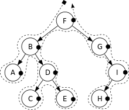
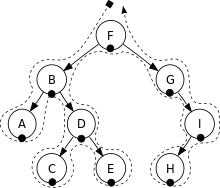

Computer Science A level
Tree Traversals
Traversal's are ways computer systems travel round and collect data within certain data structures
Pre-order traversal
Travels around the outside gathering the left-most values

Post-order
Starts on the left, and gathers the right-most values.
In-order
Gathers the numbers in size order by going to the bottom-most-left point.
